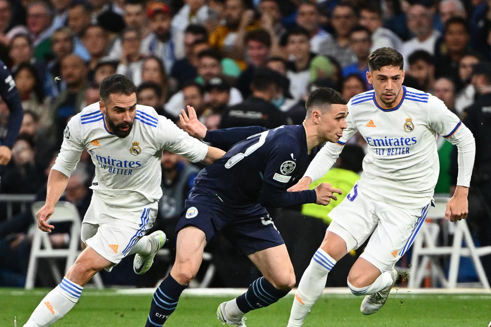

Real Madrid gano la llave contra uno de los favoritos a ser campeon
Los "Merengues" ganaron en el bernabéu 3-1 con goles de Rodrygo y Benzema al final del encuentro.
Real Madrid volvió a protagonizar una remontada inolvidable, como ante PSG y Chelsea, el equipo parecía vencido pero revirtió el marcador sobre el final y este miércoles venció a Manchester City. En la ida había perdido 4-3 y hoy se impuso 3-1 en el Santiago Bernabéu, tras ir a la prórroga. El 28 de mayo se medirá en la gran final ante Liverpool en París.
Los Españoles enfrentarán al Liverpool de Inglaterra en la final de la Champions League 2022 el próximo sábado 28 de mayo en el Stade de France.
RESUMEN DEL REAL MADRID VS MANCHESTER CITY

Alineaciones:
Real Madrid: Thibaut Courtois, Nacho Fernández, Dani Carvajal, Ferland Mendy, Éder Militao, Luka Modrić, Toni Kroos, Casemiro, Federico Valverde, Karim Benzema y Vinicius Junior.Manchester City: Ederson Moraes, Kyle Walker, Joao Cancelo, Aymeric Laporte, Rúben Dias, Kevin De Bruyne, Bernardo Silva, Rodri, Philip Foden, Riyad Mahrez y Gabriel Jesús.